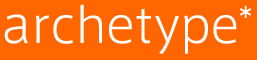
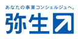
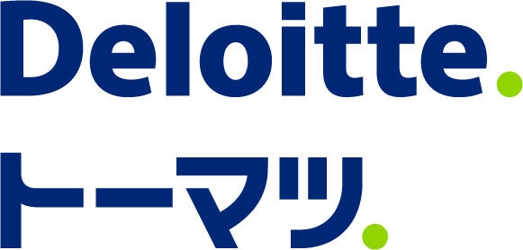
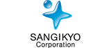

スポンサー
KBC Business LeverageおよびKBC実行委員会のイベントは、下記協賛企業の皆さまに支えられて成り立っています。
|  |  |
 | ||
| アーキタイプ株式会社 | 新日本有限責任監査法人 | 弥生株式会社 | ||
|  |  |  |
||
| 有限責任監査法人トーマツ | 株式会社三技協 | 株式会社野心満々 | ||
 |
||||
| 日本メガソーラー整備事業株式会社 |
KBC Business Leverageとは
KBC Business Leverageは、起業を志す塾生の「実現可能性」を短期間で大幅に引き上げる、KBC実行委員会独自の起業支援プログラムです。
日本を、世界を次のステージへ引き上げるアントレプレナーはいかにして生まれるのでしょうか。また、そうした人々を発掘し、その真価を発揮するためにはどんなことが必要となるのでしょうか。3ヶ月間に渡ってビジネスプランではなく、そのビジネスを実行するチームに焦点を当てた支援を行うLeverageは、KBC実行委員会が7年間のビジネスコンテスト運営を経て出した、その問いに対する1つの答えです。

支援内容
KBC Business Leverageでは、プログラムへ応募したチームの中から書類審査と面接審査を経て5つのチームが選ばれ、それらのチームに対して資金とコミュニティの両側面から支援が提供されます。これらの支援の全ては無償で提供され、KBC実行委員会は支援に伴う一切のリターンを求めません。
| 資金の支援 | プログラム開始時に10万円の活動支援金を提供するほか、最終報告会にて優秀なチームに対して協賛企業とKBC実行委員会より総額100万円の資金提供を行います。 |
| 機会の支援 | プログラム期間中にはチームの進捗発表・メンタリングの場として3回のクローズドな報告会と1回の公開報告会(最終報告会)を設けています。 |
| つながりの支援 | 各チーム1名づつの起業支援家がスーパーバイザーとしてサポートを行うほか、KBC実行委員会が7年間のビジネスコンテストを通して培ったつながりが報告会の場を中心としてチームへ提供されます。 |
最終報告会プログラム

KBC Business Leverageの参加チームは9月28日の決起会「Kick Off Party」以降、KBC実行委員会のメンバーや起業支援家によるスーパーバイザー、様々な企業からお集まりいただいたメンターといった人々の支援を受けながら自身の事業を推進しています。KBC Business Leverageにおける「報告会」はその事業の進捗をLeverageにご協賛いただいている起業の皆さまや他のスーパーバイザー、メンターへ発表する機会として設けられていました。
しかし、KBC実行委員会ではそうした、本来はクローズドに行われる会にこそこれから起業家となる学生にとって魅力的な情報が詰まっていると考え、その第4回目となる「最終報告会」については大きなホールで一般観覧者を募集して開催することを決定しました。
基本情報
| 日程 | 2014年12月14日(日) |
| 時間 | 13:00~18:00 (終了後20:30まで懇親会がございます) |
| 場所 |
慶應義塾大学 三田キャンパス 北館ホール ・田町駅（JR山手線／JR京浜東北線）徒歩8分 ・三田駅（都営地下鉄浅草線／都営地下鉄三田線）徒歩7分 ・赤羽橋駅（都営地下鉄大江戸線）徒歩8分 |
| 観覧費 |
無料 (懇親会へ参加される場合には別途学生1000円、社会人5000円を頂戴いたします) |
| お申込み | 12月12日までにこちらのページよりお申込み下さい。 |
| 定員 | 300名 |
タイムテーブル
最終報告会は基調鼎談、報告プレゼンテーション、デモンストレーションを中心として構成されており、観覧者の皆さまにはその全てをホールの客席でご覧いただけます。当日のタイムテーブルは以下のようになっておりますが、当日までに予告なく変更される場合もありますので、ご注意下さい。
また、当日報告を行うチームについてはLeverage参加チームの情報をご覧ください。
| 12:30 | 開場 |
| 13:00 | 開会 |
| 13:00~13:20 | OPムービー、開会の挨拶、協賛企業紹介 |
| 13:20~14:20 |
パネルディスカッション1 |
| 14:20~14:30 | 休憩 |
| 14:30~15:45 | チームによるプレゼンテーションと講評 |
| 15:45~16:20 | 休憩 |
| 16:20~17:30 | パネルディスカッション2 |
| 17:30~17:40 | 休憩 |
| 17:40~18:00 | 各授与、講評、観覧者賞 |
| 18:00~18:10 | 閉会の挨拶 |
| 18:20~20:20 | 懇親会 |
Leverage参加チーム
最終報告会で発表を行うチームは9月からの3ヶ月間に渡り、数知れない困難を乗り越えてながらなんとか事業を推進してきました。
自分たちの思い描くサービスの最高の形を目指してプロトタイプのスクラップ・アンド・ビルドを繰り返したチーム、ミニマルに製品をつくって関係者へのヒアリングを重ねた結果β版のテストにまで漕ぎ着けたチーム、実際に法人登記を行って本格的に会社としてのスタートを切ったチーム...
そんなチームの全てを、最終報告会ではみなさんにお伝えします。

週末Quintet

今までのECサイトは、消費者が望んでいた商品と実際の商品のギャップを恐れて、靴などの特定の商品が売れにくかった。そこで動画のライブでネットオークションを行えるwebサイトをつくり、正確に商品の情報を消費者に伝えることができるようにしたいと考えています。
täglich

身近なものを利用した発電機を作ろうというチーム。５チーム中の中で唯一製品開発を行っています。現在はプロトタイプを作成したり、それを用いた新たな活用方法を探しています。
チームとりまやろう！

『チームとりまやろう！』は代表の織田健嗣を中心に川鯉光輝さんと田中仁さんの３人で結成されるチームです。チームメンバーはそれぞれ異なった特性（エンジニア、デザイナー）を持ち、音楽ベースでサービス提供を考えています。
チーム治安情報

ニュースに流れる情報では遅すぎる！！海外ではどこが治安が悪いかわからない！！そんな悩みを解決しようというのがこのチーム。SNSから情報を集めて最新の治安情報を提供します。
ぷっとぷったーず☆

「デザイナー・アーティストの卵を救う」という理念のもと活動しているチームです。美大生達へのヒアリングの中ででてきた「展示場所が高い・少ない」という課題を解決するため、様々な展示場所と美大生の双方が多く集まるプラットフォームを作りたいと考えています。